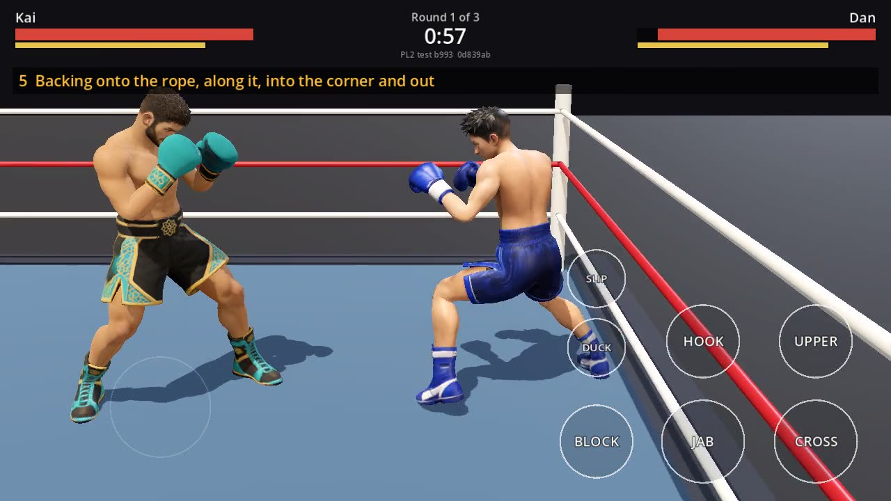
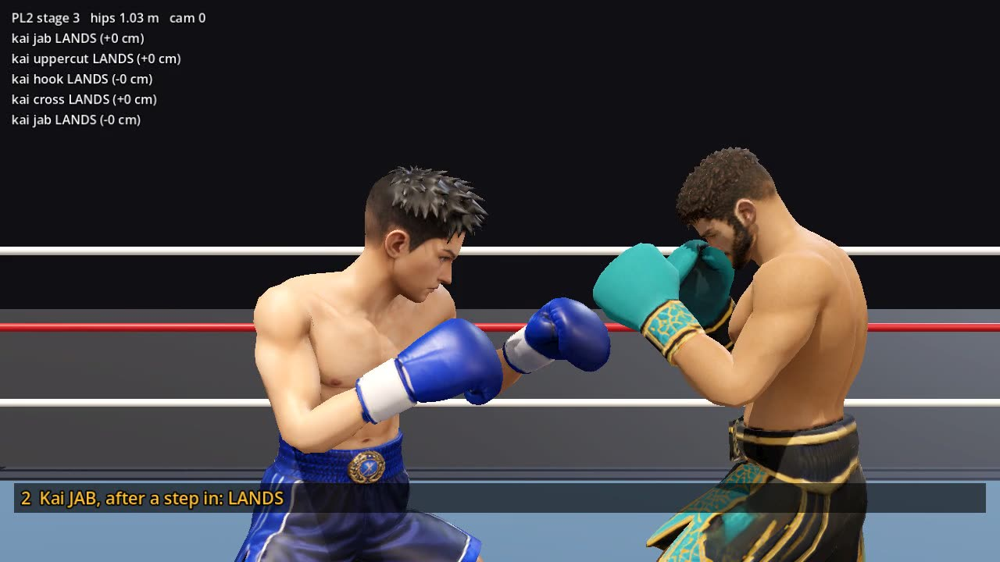
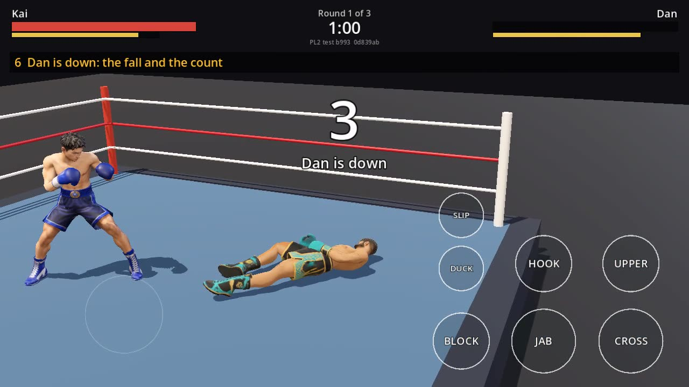

Punch League — карточная игра про бокс: ты выбираешь удар, соперник выбирает удар, бойцы разыгрывают. Она вышла в Google Play, App Store, RuStore и на itch.io, остаётся там и продолжает получать исправления.
Punch League 2 — другая игра, и минута игры в ней другая. Боксёра ведёшь сам, в реальном времени, по рингу, в котором можно кружить. Всё решает дистанция. Начал удар — уже не отменишь. Бьёшь слишком часто — остаёшься без сил. Убрал голову — соперник промахнулся. Потрясённый боец падает. Мы делаем её вместе с Пашей, другом студии, который собрал первый трёхмерный прототип. Бойцов пока двое: Кай и Дэн.

Игра не вышла. Это отчёт из мастерской.
Прототип, который проходил все тесты
В первой трёхмерной версии два смоделированных боксёра стояли внутри экрана карточной игры. За три дня в ней набралось полторы сотни коммитов, и тесты были зелёными на каждом. И каждый раз, когда сборка попадала на телефон, вердикт был один и тот же: удары короткие, атакующий отъезжает назад, ноги наезжают друг на друга.
Мы перестали подкручивать и стали мерить. Нашлись три вещи.
- Они стояли слишком близко. Карточная игра ставила бойцов примерно в 0,9 метра друг от друга: картам место не нужно. Это дистанция клинча. Джеб оттуда не может выпрямиться: локоть в игре был согнут примерно до 100 градусов, а в исходной анимации — 168.
- Попадание было таймером. Уклон спасал от удара потому, что правило считало момент удачным, а не потому, что голова ушла с пути перчатки. Поэтому защита и не выглядела защитой.
- Тест мерил не то. Он проверял, что одна точка подошла к другой ближе чем на 12 сантиметров. И проходил на каждой сборке, которую телефон забраковал.
Честный вывод: прототип свою работу сделал. Он доказал управление и правила. Картинке нужна была настоящая трёхмерная сцена, и эту часть мы начали заново.
Что построено
- Два тела в комнате. Настоящий ринг в метрах. Прямые удары работают примерно на метре между бёдрами, хуки и апперкоты — примерно на 0,8. Рука теперь выпрямляется до конца.
- Контакт. Удар считается начатым в момент броска. Блок работает, когда перчатки стоят на пути удара, уклон — когда головы на этом пути нет. Перчатка, которую вы видите, останавливается на лице или на защите там же, где это посчитали правила, с точностью до сантиметра.
- Ринг. Бойцы кружат друг вокруг друга, камера поворачивается вместе с ними, канаты прогибаются, пружинят и запирают человека в углу.
- Один бой. Три раунда по минуте, нокдаун со счётом и подъёмом, ради которого надо стучать по экрану, и решение судей, если оба на ногах. Дэн умеет драться тремя способами: давить, ловить на контратаке и работать с дистанции.

Как мы оцениваем движение
Про анимацию врут и цифры, и видео на полной скорости. Работает раскадровка: все кадры одного удара лежат рядом на одном листе, снятые неподвижной камерой. Скачок в один кадр в движении не виден, а на листе бросается в глаза.
Так нашёлся самый неприятный пока баг. Второй джеб сразу после первого за один кадр перебрасывал руки из позы возврата в стойку. Причина скучная: один и тот же слот анимации запускался заново, пока ещё затухал. Исправление — два слота по очереди. Рывок перчатки упал с 16 единиц до 5; одиночный чистый джеб даёт 3.

Хук и апперкот мы сравнивали по кадрам с записью тренера по боксу, который показывает те же удары. Локоть в хуке теперь поднимается вместе с кулаком, а не тащится под ним. В апперкоте появился подсед на шесть сантиметров, и удар идёт от ног. Поворот бёдер в хуке всё ещё неправильный, и его придётся переделывать в самой анимации.
Пусть сначала подерутся машины
Прежде чем изменение правил попробует человек, два компьютерных бойца проводят с ним восемнадцать боёв. С первыми числами каждый бой заканчивался в первом раунде, и урон пришлось снизить. Со следующими вышло наоборот: никто не падал. Когда удары стали дешевле, а промах — не таким дорогим, те же восемнадцать боёв дали четыре нокаута вместо нуля и сорок нокдаунов вместо пяти, а время, когда у бойца нет сил даже на джеб, сократилось больше чем вдвое.

Что ещё не так
- Когда за обоих играет компьютер, Кай выигрывает у Дэна пятнадцать боёв из восемнадцати. Джеб у него длиннее, и в правилах на это пока нет ответа.
- Хуку нужен поворот бёдер, а рука слишком долго возвращается поперёк лица.
- Есть два бойца, один ринг и никакой игры вокруг боя: ни карьеры, ни лестницы соперников.
- Последняя сборка ещё не получила вердикт на телефоне. Всё, что выше, — записи и проверки, а телефон их уже опровергал.
Скачать пока нечего, и дату мы называть не будем. Когда появится раунд, который хочется переиграть, он сначала окажется на этом сайте — бесплатно и в браузере, как всё остальное. А пока карточная Punch League лежит здесь же. Если вы боксируете или просто знаете, какой на ощупь должна быть хорошая игра про бокс, напишите нам, что нельзя испортить.